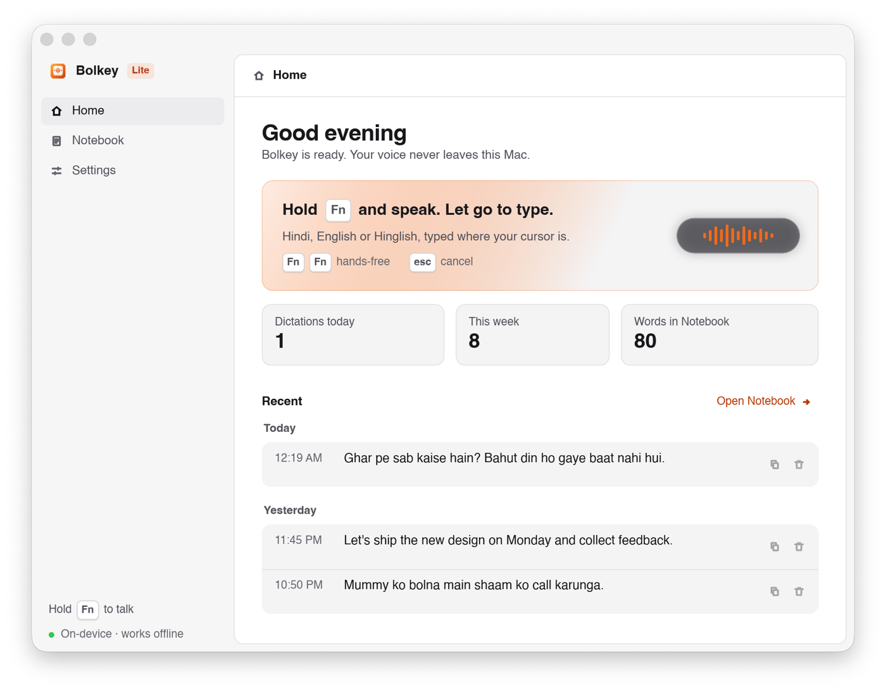
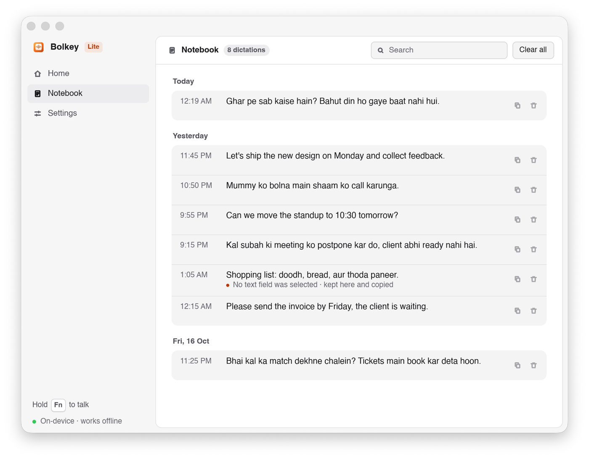
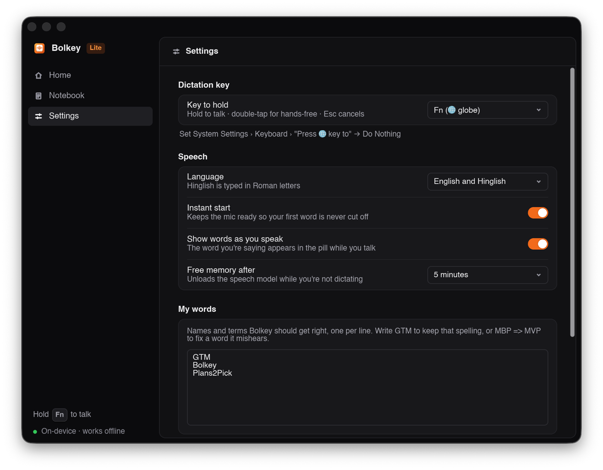
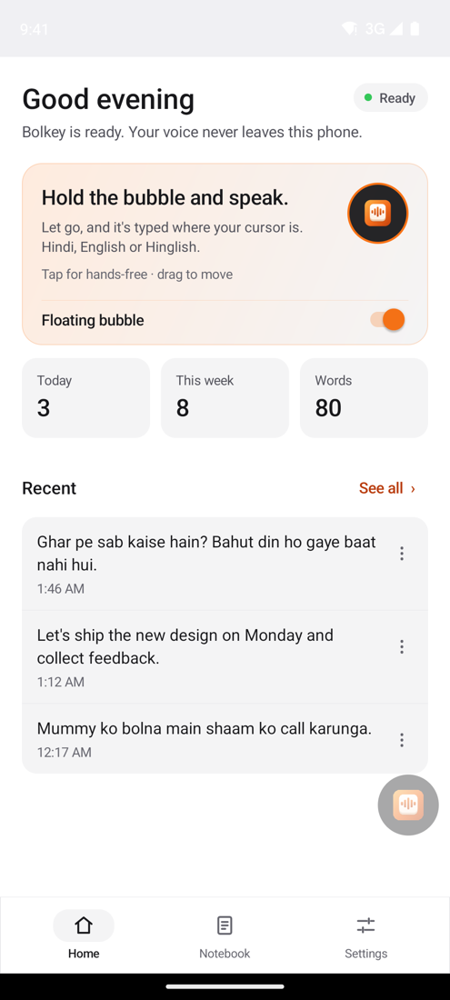
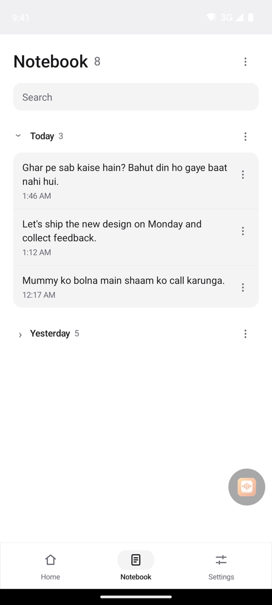
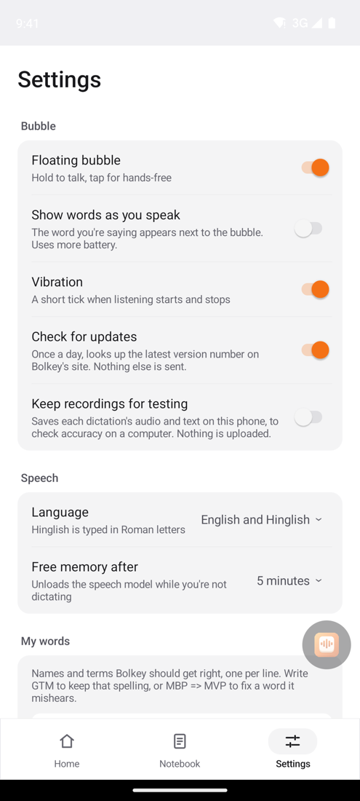

Hold a key, say it in Hindi, English or a mix of both, and the text appears in WhatsApp, Gmail, Slack, Notes or any other app. It runs on your own device, so it's fast, free and private.
Hinglish comes out in Roman letters, the way you'd type it in chat. Punctuation, numbers and capitals are added for you. These are real results from our tests.
kal subah ki meeting ko postpone kar do client abhi ready nahi hai
Kal subah ki meeting ko postpone kar do, client abhi ready nahi hai.
Hinglishcan we move the standup to ten thirty tomorrow
Can we move the standup to 10:30 tomorrow?
English · times and questionskabhi kabhi mujhe lagta hai ki main zyada kaam kar raha hoon
Kabhi kabhi mujhe lagta hai ki main zyada kaam kar raha hoon.
Hindi, in Roman letterslets refactor the destination page to load images lazily
Let's refactor the destination page to load images lazily.
Technical Englishthe payment of two thousand five hundred rupees is pending
The payment of two thousand five hundred rupees is pending.
Indian Englishghar pe sab kaise hain bahut din ho gaye baat nahi hui
Ghar pe sab kaise hain? Bahut din ho gaye baat nahi hui.
Hinglish · questionsWhatsApp, Gmail, Slack, Notes, Chrome: wherever your cursor is. No copying and pasting.
Text appears about 0.2 seconds after you let go on a Mac, and in about a third of a second on a phone.
Speech is turned into text on your own device. No account, no cloud, and it works without internet.
Add names and terms to My words: GTM, Plans2Pick, your colleagues' names. Fix anything it mishears.
Hold the key (or the bubble on Android) while you talk, or tap twice and keep talking as long as you like.
Every dictation is kept in your Notebook on the device, with search, copy and delete.
A small glass pill shows that Bolkey is listening. The Bolkey window keeps your dictations and settings in one place.



A small bubble floats over your apps. Hold it and speak, and the text is typed where your cursor is.



Types into any app on your Mac: Mail, Slack, Notes, your browser.
Sits in the taskbar and types into any app on your PC.
A small bubble floats over your apps and types where you tap.
A Bolkey keyboard that types what you say, in any app.
Yes. There's no account and no subscription.
No. Speech is turned into text on your own device, and Bolkey keeps no recordings. The only time it goes online is a once-a-day check for a newer version, which downloads one tiny file with the version number and sends nothing about you. You can turn that off in Settings.
Hindi, English and Hinglish, the natural mix of both. Hinglish and Hindi come out in Roman letters ("kal milte hain"), the way most people type in chat.
Open Settings → My words and add it, one per line. Write GTM to keep that exact spelling, or MBP => MVP to fix a word it keeps mishearing.
This preview isn't signed by Apple or Microsoft yet, so the first launch needs one extra click: Open Anyway on a Mac, Run anyway on Windows. It's the same app either way.
Bolkey tells you when a new version is out, on its Home screen. Download it from this page and install it over the old one; your settings and Notebook are kept.